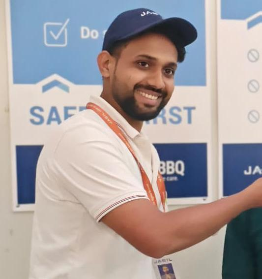
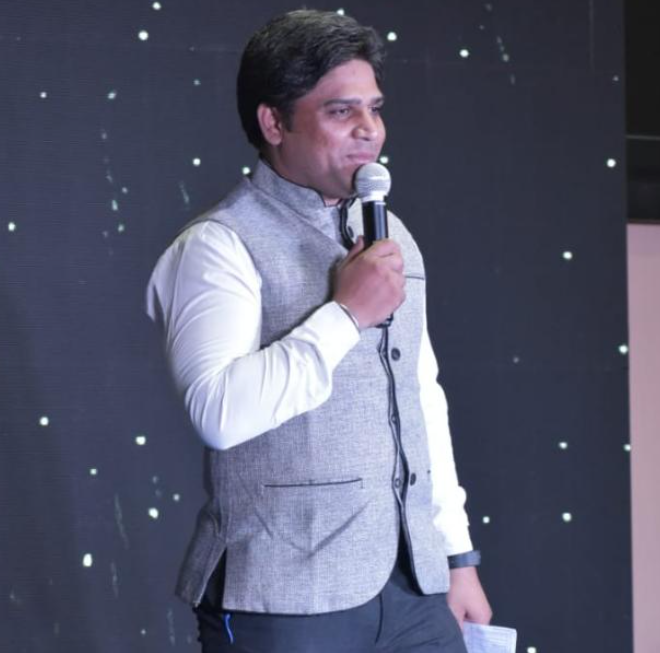
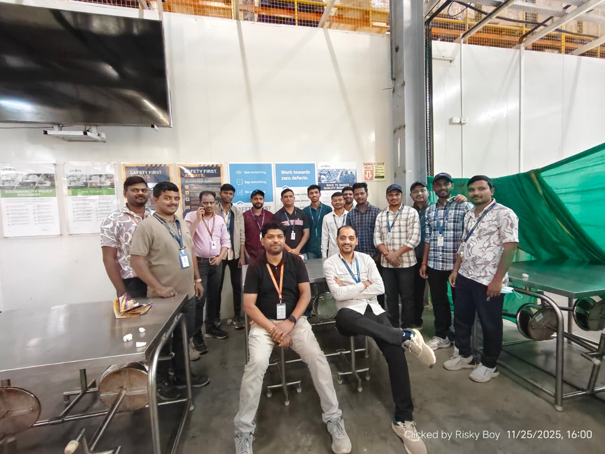

Meola Liu
Automation Engineering Manager
—Thank you❤️.
I joined Jabil at a time when I was hungry to learn, eager to contribute, and ready to give everything to the work. For a long stretch, that is exactly what I did — and the growth I experienced there shaped the professional I am today.
Then life, as it does, asked something difficult of me. A family situation surfaced that I could not navigate while holding my role the way it deserved to be held. I had to make a choice, and it was not an easy one.
What happened next is the reason this page exists. Special people — named below — chose to handle my situation not as a process, but as a person. They listened, they understood, and they helped me leave with dignity intact.
That is not something I will forget. And it is not something I can let go unacknowledged.
This page is my way of putting that gratitude somewhere it can stay.
Each of them, in their own way, made space for me to do the right thing for my family without losing myself in the process. These words are small. They are meant sincerely.



Every story has its waypoints. These are mine — the joinings, the turning, the help that arrived, and what came after.
A new beginning I truly valued. New desks, new faces, and a chance to prove myself where the work genuinely mattered. I walked in with hope, ready to give my best every single day.
The work challenged me in the best possible way. Every day gave me a chance to learn, grow, and become better. I was proud of the progress I was making, and for the first time in a long time, it truly felt like I was building something meaningful.
Then the ground shifted at home. A serious family situation came up that needed my time, attention, and presence. It wasn't a decision I wanted to make, but it became one I had to. The details are personal, but the responsibility was real. Sometimes life asks you to choose between your career and the people who need you most, and in that moment, I knew where I had to be.
Samrat , Meola Liu, Aries, Seema Sheriker Ma'am, and Satish Walke, Sir... I don't think you will ever fully know what your compassion meant to me. In one of the hardest moments of my life, you didn't just handle my situation—you handled it with humanity, respect, and genuine care. That is something I will never forget, no matter where life takes me.
I left with dignity intact. That is not a small thing to be able to say. It let me walk into what came next without carrying the kind of weight that would have broken a different ending.
And here I am today, writing these words on this page. It may be a small gesture, but it carries a gratitude that is much bigger than anything I can express. I know I can never truly repay the kindness I received, but I hope these words remain as a small reminder of how deeply it touched my heart.
A moment of appreciation, a memory preserved, and a gratitude I will carry with me wherever life takes me.
Gratitude is not a memory we visit. It is a posture we carry.
Dear Samrat Sutar, Meola Liu, Aries Chang, Seema Sheriker Ma'am, and Satish Walke Sir,
I don't know if words can truly express what your kindness meant to me. These are the only ones I have, and I hope they carry even a fraction of my gratitude.
You could have treated my situation as just another case. You chose to see the person behind it. You could have stayed silent. You chose to respond with empathy. You could have done only what your role required. You chose to do what your heart allowed.
That wasn't just professionalism. That was humanity. And that is who you are.
I left Jabil with something far more valuable than a respectful exit—I left with my dignity intact, and with a lifelong reminder that kindness and compassion still have a place in the workplace because of people like you.
If I ever find myself sitting where you sit today, and someone across the table is facing what I once faced, I will remember each one of you. I will remember that doing the right thing is not always about policy—it is about people. And I will try to give them the same understanding, respect, and kindness that you gave me.
Thank you. Not as a closing, but as a truth I will carry with me for the rest of my life.
Some kindnesses do not fade. They become part of who we are.